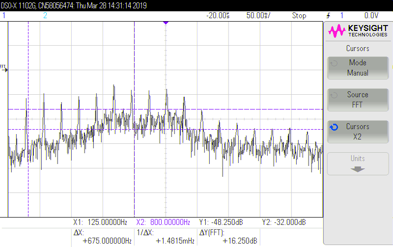
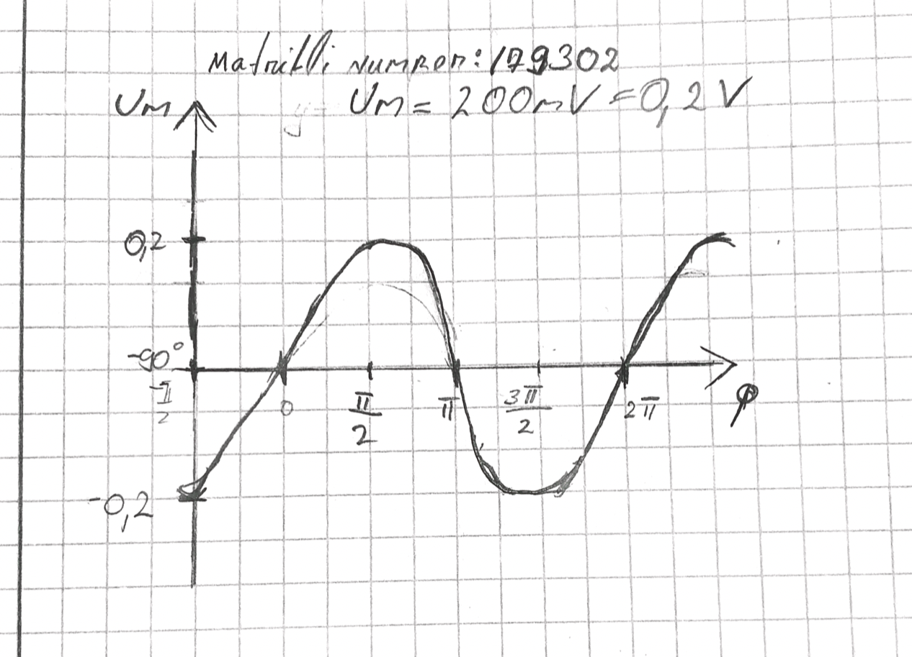
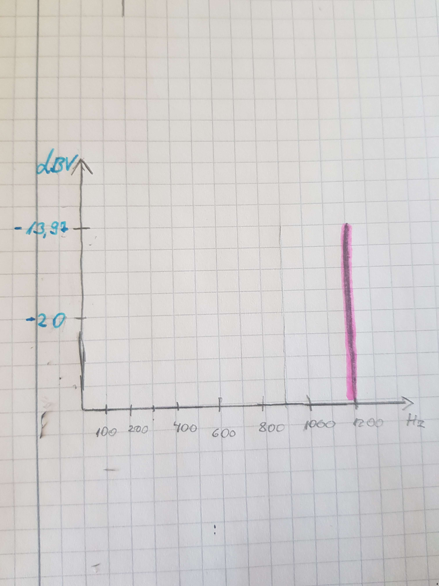

Tipust tipuni amplituud: 225mv
Periood: 2.35ms
Sagedus: 426Hz
Pinge efektiivväärtus detsibellides: -21dBV
| Töö tegijate nimed: |
| Tristan Krass |
| Katarina Kala |
| Töö tegemise kuupäev: Mon Apr 1 12:54:29 2019 |
| Terminalseadme seisund | U1 [V] | U2 [V] | U3 [V] |
| Rahuseisund | 43.3 | 43.1 | 0 |
| Hõiveseisund | 8.7 | 6.8 | 1.9 |
Telefoniliini mõõteplaadil oleva takisti takistuse väärtus 68 Ω
Leida vool, mis läbib terminalseadet tema mõlemates seisundites ja selgitada tulemusi.
I=U/R, R=68 Ω,
U3(rahuseisundis)=0V, I3(rahuseisundis)=0/68=0A,
U3(hõiveseisundis)=1,9V, I3(hõiveseisundis)=1,9/68=0,028A=28mA
Arvutada telefoniaparaadi takistus ja telefoniliini takistus.
R=U/I
R(tel)=U2(hõiveseisund)/I(hõiveseisund), R(tel)=6,8/0,028=242,86Ω
R(liin)=(U1rahuseisund - U1hõiveseisund)/I(hõiveseisund), R(liin)=(43,3-8,7)/0,028=1235,71Ω
|
|
|
|
Pinge amplituud: 125mV Tipust tipuni amplituud: 225mv Periood: 2.35ms Sagedus: 426Hz |
Sagedus: 400Hz Pinge efektiivväärtus detsibellides: -21dBV |
Arvutada signaalipildilt leitud pinge amplituudväärtusest pinge efektiivväärtus:
Pinge efektiivväärtus (root mean square amplitude) - siinussignaali puhul amplituudväärtus jagada ruutjuur 2-ga.: U=0,125V/√2 = 0,09V
Teisendada spektripildilt leitud pinge efektiivväärtus detsibellidest [dBV] voltidesse [V]:
dBV = 20 * log_10(V)
V = 10 ^(dBV / 20)
V = 10 ^ (-21 / 20) = 0,1V

|

|
|
Numbriklahv:1 Tipust tipuni pinge: 2.7V |
Spektripildilt leitud esimene sagedus: 700Hz Esimese pinge efektiivväärtus [dBV]: -8dBV Spektripildilt leitud teine sagedus: 1210Hz Teise pinge efektiivväärtus [dBV]: -5dBV Võrrelda mõõdetud sagedusi tabelis Tabel 1 näidatud sagedustega: Tulemused on üsna täpsed. |
Numbriklahvi signaalipildil on kahe erineva sagedusega siinussignaalidest liitunud signaal.
Oletame, et mõlema sageduskomponendi pinged on võrdsed.
Arvutada tipust tippu amplituudist ühe komponendi pinge efektiivväärtus voltides.
Um = 1,5V
U = 1.5 /( 2√2) = 0,53V
LISADA ARVUTUSED SIIA!
Arvutada spektripildilt leitud mõlemad pinge efektiivväärtused voltides.
Esimese pinge efektiivväärtus [dBV]: -8dBV
Esimese pinge efektiivväärtus [V]:10^(-8/20)=0,4V
Teise pinge efektiivväärtus [dBV]: -5dBV
Teise pinge efektiivväärtus [V]:10^(-5/20)= 0,56V

|

|
|
Pinge amplituud: 2,6V Periood: 0.9ms Sagedus: 1,11 kHz |
Pinge efektiivväärtus: -4dBV |
Arvutada vile signaalipildilt mõõdetud pinge amplituudist pinge efektiivväärtus.
U=2,6V/√2 = 1,8V
Kas amplituud on suurem vilistatud signaalipildil või vilistatud spektripildil?
Signaalipildil on suurem amplituud, sest pinge
efektiivväärtus on suurem kui spektripildil (U=0,6V).
* Signaalipildi efektiivväärtus: 1,-8V
* spektripildi efektiivväärtus: 10 ^(-4/20) = 0,6 V
* signaalipildi amplituud: 1,8 * √2 = 2,6 V
* spektripildi amplituud: 0,6 * √2 = 0,8 V

|
 |
|
Liikme nimi: Tristan Vokaal: a Tipust tipuni amplituud: 2,6V Pinge amplituud (maksimaalne kõrvalekalle tasakaaluolekust): 1.5V Periood (kõige pikem): 8.5ms Sagedus (kõige madalam): 117.6Hz Periood (kõige lühem): 1,5ms Sagedus (kõige kõrgem): 667Hz |

|

|
|
Liikme nimi: Katarina Vokaal: e Tipust tipuni amplituud: 0.6V Pinge amplituud (maksimaalne kõrvalekalle tasakaaluolekust): 0.4V Periood (kõige pikem): 4.5ms Sagedus (kõige madalam): 222Hz Periood (kõige lühem): 2.5ms Sagedus (kõige kõrgem): 400Hz |
Matrikli Number: 179302
y = Um⋅sin(ω⋅t+φ) , kus
y on signaali kuju,
Um on amplituud (mitte efektiivväärtus),
ω on ringsagedus ja φ on faas.
Um=200mV=0.2V
f=600 Hz
φ=-π/2rad=-90
ω = 2*π*f=2*π*600Hz=1200π Hz
y = 0.2 * sin(1200π*t-90)
Uef[dBV]=20*log_10 Uef[V]
Uef[dBV]=20*log_10 (0,2)=-13.97dBV
Tänase seisuga võin öelda, et oskan ostsillograafi pealt leida pinge efektiivväärtuseid!